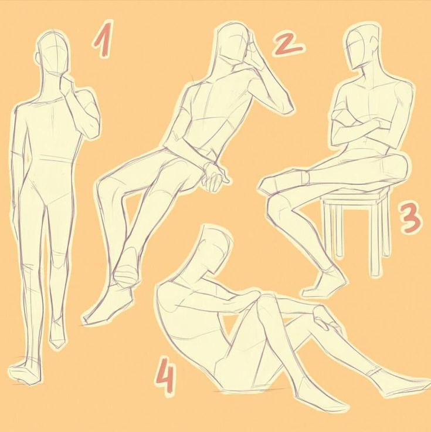

«Джошуа Рейнольдс»
Кажется, пробежали мурашки по телу. Но ни в коем случае не стоит отчаиваться! Здесь вы найдете много крутого материала, посвященного изучению изображения человека: позы, референсы, пластика, перспектива, части тела, его строение и многое другое. Скорее читай дальше!
Чтобы открыть для себя больше информации и наконец приступить к изучению мучающих тебя вопросов о том, как рисовать человека, тебе стоит лишь перейти по предложенным ниже интересующим тебя ссылкам. Там ты увидишь объяснения, приведенные в пример картинки, обучающие видео и ролики с примерами от прекрасных художников!